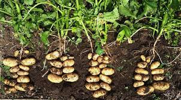
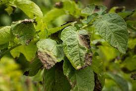

Potato (Solanum tuberosum) is a versatile and essential starchy crop consumed worldwide. With a rich history dating back to pre-Columbian times, potatoes have played a crucial role in global food security.
These tuberous vegetables are valued for their high carbohydrate content, making them a dietary staple in various cuisines. Potatoes are not only nutritious but also adaptable to diverse climates, contributing significantly to agricultural economies.
The cultivation of potatoes involves several key practices to ensure optimal growth and yield. Selecting high-quality seed potatoes, preparing well-drained, loose soil, and providing adequate sunlight are critical factors in successful potato farming.
Planting is typically done in rows, and hilling—piling soil around the base of the plants—promotes tuber development. Potato plants undergo distinct growth stages, including sprouting, flowering, and tuber formation, each requiring specific care and attention.
The world of potatoes boasts an impressive array of varieties, each with its unique attributes. From the classic Russet potatoes favored for baking to the creamy-textured Yukon Golds ideal for mashed potatoes, there's a potato variety for every culinary preference.
Exploring different potato varieties adds diversity to culinary creations, allowing chefs and home cooks alike to experiment with flavors, textures, and colors in their dishes.
Potatoes thrive in well-drained, loamy soil enriched with organic matter. Soil preparation involves incorporating compost or well-rotted manure to enhance fertility. Adequate soil moisture, combined with proper drainage, is crucial for preventing waterlogging and ensuring healthy tuber growth.
Soil testing and regular monitoring help farmers maintain optimal soil conditions, supporting robust potato plants and maximizing the yield of high-quality potatoes.
While potatoes are resilient, they are susceptible to various pests and diseases. Implementing integrated pest management (IPM) strategies, such as crop rotation, using disease-resistant varieties, and applying eco-friendly pest controls, helps maintain a healthy crop.
Common potato foes include late blight, early blight, and potato scab. Timely identification and intervention, along with good agricultural practices, are essential in minimizing the impact of pests and diseases on potato crops.
Harvesting potatoes at the right time ensures optimal flavor and storage potential. Wait until the foliage turns yellow and begins to wither. This signals that the potatoes have reached maturity and are ready for harvesting.
Use a digging fork or shovel to carefully unearth the potatoes, being cautious not to damage them. Allow the potatoes to air-dry for a few hours, which helps the skin set and reduces the risk of rot during storage.
For storage, choose a cool, dark place with good ventilation. Avoid storing potatoes near onions, as they release gases that can accelerate spoilage. Properly stored potatoes can last for an extended period, providing a valuable food source.